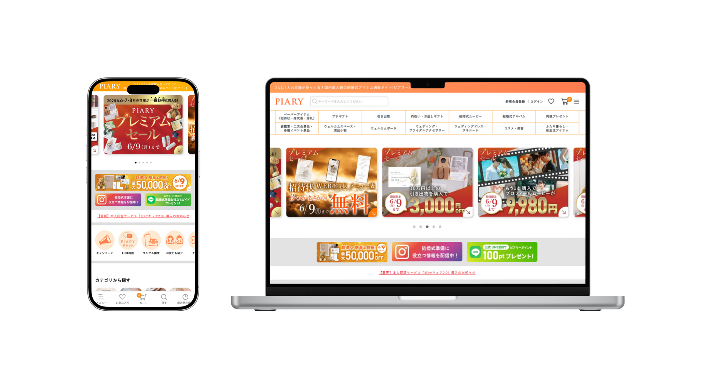
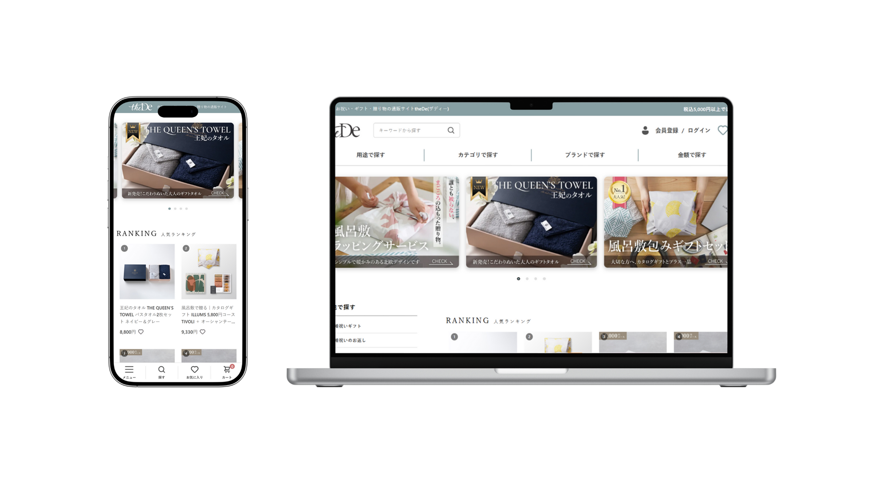
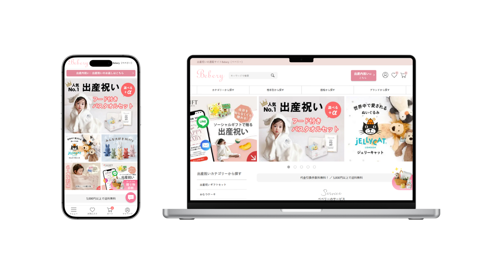

MAI
PORTFOLIO
- マイ ポートフォリオ -
- PROFILE
- PROFILE
- PROFILE
- PROFILE
- PROFILE
- PROFILE

※現職の同期と三重のジブリ展に行った時の写真。
幼少期からさまざまなジブリ作品に触れてきました！
about
氏名：兼松 真衣（かねまつ まい）
生年月日：2000年9月27日
年齢：24歳
出身地：埼玉県 所沢市
居住地：岐阜県 岐阜市
出身大学：都留文科大学 文学部 比較文化学科
経験スポーツ：なぎなた・ソフトテニス・剣道・バドミントン
趣味：野球観戦
└西武ライオンズファンです！
国内最大規模のブライダル商材ECサイトにて、
フロントエンドエンジニア・Webデザイナー
ECマーケターを約2年間経験。
- CAREER
- CAREER
- CAREER
- CAREER
- CAREER
- CAREER
自社サイト
- PIARY -
特徴
結婚式や二次会など様々なシーンで使えるプチギフトや、招待状・席次表・席札などのペーパーアイテム、引き出物、引き菓子、結婚式を演出するウェルカムボードの販売する、国内最大級のブライダルアイテムECサイト。
季節のイベントに合わせた商品も販売しており、挙式だけでなく、ギフトを中心に幅広い用途で利用されます。
- theDe -
特徴
ギフト専門通販サイトtheDe(ザディー)。PIARYが20～30代の花嫁様をターゲットとしているのに対し、theDeは40～60代の大人な女性をターゲットとしています。
風呂敷に包んだギフトセットや高品質なギフトを多数取り揃えおり、お祝いごとや内祝いのシーンに、真心と素敵な贈り物をお届けします。
- Bebery -
特徴
出産祝いギフトを探すならBebery（ベベリー）。大人気のジェリーキャットやフード付きバスタオルなど、最短即日出荷の商品を多数取り揃えています。
出産祝いやベビー用品を販売しているため、かわいらしい雰囲気のページが多いことが特徴的です。
- P・S・GIFT -

特徴
SNSで気軽にギフトを贈れるサービスであるP・S・GIFT（ピアリーソーシャルギフト）。現代のライフスタイルにマッチした、革新的なギフトサービスです。
若い世代の方々に利用されることが多く、誕生日、結婚祝い、出産祝い、母の日、父の日など、さまざまなシーンに合わせたギフトが揃っています。
職務経歴概要
ブライダル商材を扱う国内最大級規模のECサイトを展開する株式会社ピアリーにて、約2年間フロントエンドエンジニアとして商品やブランドの特集ページのコーディング作成を中心に従事しました。Webデザイン領域にも携わり、商品ページのバナー制作なども経験しました。2024年12月より楽天市場店のEC運営・マーケティングを担当し、ユーザー導線の改善、特集ページの設計、クーポン施策、LINEやメルマガを活用した販促など、多角的なアプローチで集客を行いました。コーディングとデザイン、さらにマーケティングの視点を融合させた実践的な提案・実装力が強みです。
職務経歴内容
2023年4月～
2024年11月
フロントエンドエンジニアとして、主に商品やブランドの特集ページのコーディング業務を担当。
あわせて、Webデザイン業務として商品ページ用バナーの作成にも従事。
詳しく見る ▸
2024年12月～
現在
PIARY楽天市場店、Bebery楽天市場店、PIARY Yahoo!ショッピング店、PIARYギフトモール店の各モール店舗において、ECサイトの運営を担当。 詳しく見る ▸
- WORKS
- WORKS
- WORKS
- WORKS
- WORKS
- WORKS
Coding

EC-CUBE HTML CSS
┃参鶏湯紹介特集ページ
HTMLとCSSの基礎を集約したページ。

EC-CUBE HTML CSS JavaScript jQuery
┃くまくんのぎゅっと幸せクッキー缶
幅広い動きを取り入れた、出産祝いギフト商材の特集ページ。
詳しく見る ▸

WordPress(レスポンシブ) HTML CSS Excel関数
┃ギフト専用サイトtheDeの商品ページ
デザイン～Excelを用いたコーディングを担当。
詳しく見る ▸

WordPress(レスポンシブ) HTML CSS Excel関数
┃ギフト専用サイトtheDeのブランドページ
Excel関数を用いてページの構成を仕組み化。
詳しく見る ▸

EC-CUBE(レスポンシブ) HTML CSS
┃姉妹サイトのソーシャルギフト専門サイト
EC-CUBEのレスポンシブでのコーディング。
詳しく見る ▸

WordPress(レスポンシブ) HTML CSS JavaScript jQuery
┃姉妹サイトの出産祝い専門サイト
Beberyのクリスマスギフト特集 。
詳しく見る ▸
RMS Marketing

┃業務内容
PIARY楽天市場店、Bebery楽天市場店、PIARY Yahoo!ショッピング店、PIARYギフトモール店の各モール店舗において、ECサイトの運営全般を担当。
┃施策内容
母の日ギフト施策における転換率・アクセス数向上と売上倍増に向けての取り組み。詳しく見る ▸
キャンドル在庫過多問題に対する新商品企画と販売強化に向けての取り組み。詳しく見る ▸
Design
デザイン業務では、簡単なバナー制作をはじめ、商品画像の作成やInstagram用コンテンツバナーのデザインなどを担当。
今後は、UI/UXを意識したLP（ランディングページ）デザインや、ユーザーが視覚的に楽しめるような表現力の高いLP制作にも取り組んでいきたいと考えています。
Copyright © mai kanematsu, All rights reserved.